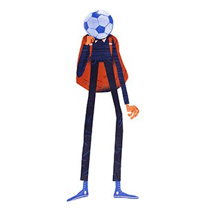
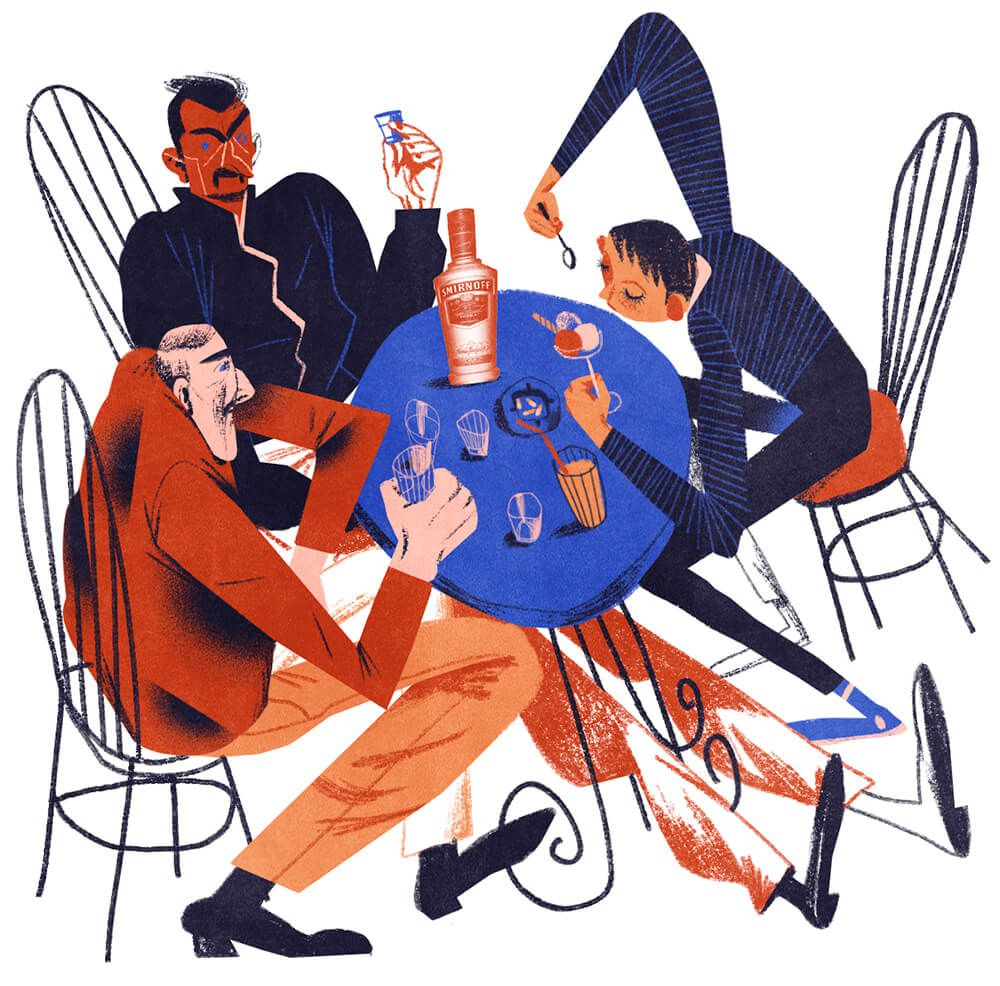
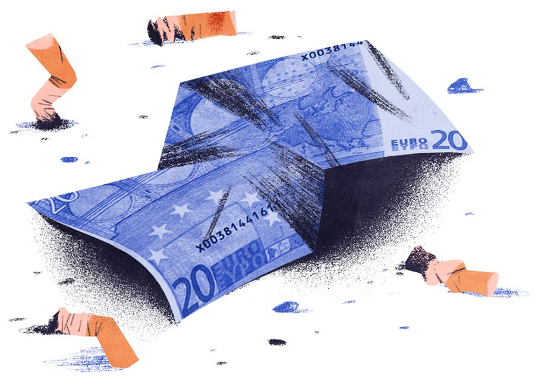
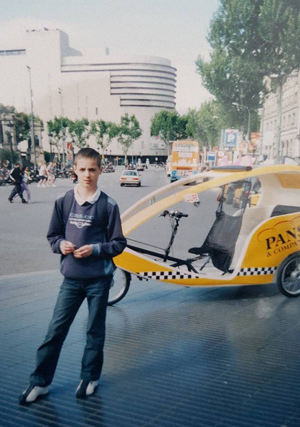
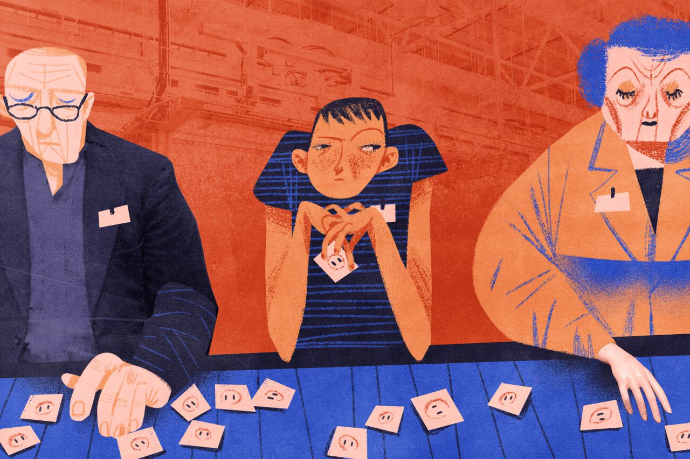
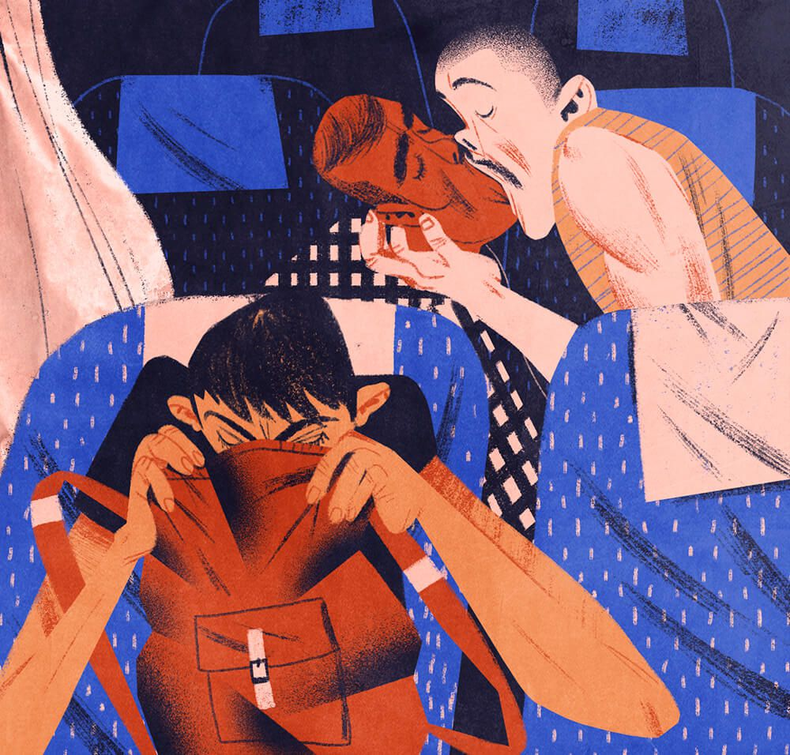
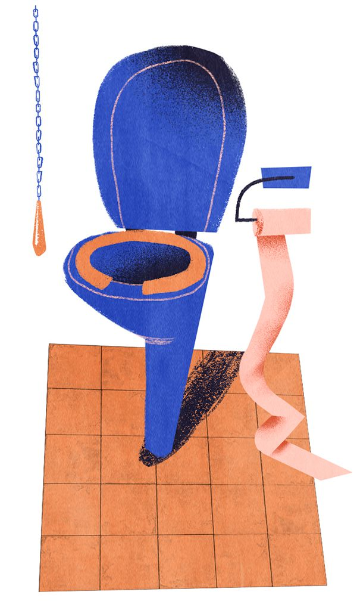
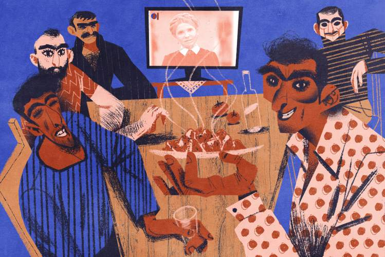

Illustration: Maria ShishovaГена оказался высоким худощавым мужчиной с грустными и умными глазами. Отец был вне себя от счастья, ведь он встретил старого друга, с которым не виделся почти десять лет. Их план был нехитрым: гулять по городу и заливаться спиртным. У меня тоже были грустные глаза, поэтому Гена принял меня за своего, и мы отправились в это алкоприключение втроём.
По словам Гены, его жизнь шла как по маслу: хорошо оплачиваемая должность инженера на автомобильном заводе, трёхкомнатная квартира в долгосрочной ипотеке, жена и двое детей с испанским гражданством. Мы ходили по барам, Гена угощал отца виски, меня десертами и периодически отсыпал мне мелочи, чтобы я исчез в каком-нибудь ближайший Locutorio, когда их разговоры становились слишком интимными для моих юных ушей.

Illustration: Maria ShishovaБлиже к вечеру мы переместились в парк неподалёку от нашего приюта, прихватив с собой бутылку Smirnoff и какую-то закуску.
Несмотря на обилие выпитого, Гена оставался трезвым, грустным и задумчивым. Отец же кайфовал.
Мы сидели на лавочке в кромешной темноте, они пили водку прямо из бутылки и вспоминали тяжёлую, но насыщенную работу проходчиками. Отец с выражением читал нам свои старые шахтёрские стихи про Доброго Шубина, пока в пятидесяти метрах от нас какой-то молодой человек шумно совокуплялся со своей темнокожей подругой.
Ближе к полуночи мы отправились в наш новый дом, Гена пошёл с нами и уснул на полу между коек.
Отец встал рано и поехал на работу, но перед тем как уйти, вручил мне недопитую бутылку Smirnoff и серьёзно прошептал:
— Спрячь её от Гены.
Я убрал бутылку под подушку и продолжил дремать.
Около девяти мы проснулись и пошли на террасу. Пока Гена курил за столиком, я неуверенно, словно дворовой кот, зашёл в гостиную и поинтересовался, можно ли заварить кофе или чай. Женщины показали мне кухню и провели короткую инструкцию: всем жильцам преподобного сеньора Карлоса полагался бесплатный растворимый кофе, пакетированный чай и целый холодильник, забитый просроченной пиццей в картонных коробках.
Я заварил две чашки кофе и вернулся во двор. Гена молчал и курил одну сигарету за одной.
— Рома, где водка? — первое, что он спросил меня этим утром.
Я пожал плечами.
— Ладно, пойдём погуляем.
Наша прогулка завершилась у ближайшего кафе — мы присели на летней площадке. Гена угощал меня пастой, десертами и молочным коктейлем, сам же он не употреблял ничего, кроме водки с апельсиновым соком. Какое-то время мы говорили о футболе. Гена, по словам отца, был талантливым футболистом и в студенческие годы играл за донецкий «Шахтёр».
Периодически ему надоедала моя компания, тогда он давал мне мелочь на интернет.
Когда я возвращался за столик, он всё так же методично вливал в себя водку с апельсиновым соком, внимательно разглядывая свои ладони.
Так проходил день за днем. По вечерам они пили за тем же столиком с отцом, я отлучался и бродил по оживлённым улицам с Димой.
Гена переехал в гостиницу. Я не понимал, что происходит и зачем он пьёт целую неделю с четырнадцатилетним пацаном вдали от своей семьи.
В тот день он не смог рассчитаться за выпитое: официант сказал, что на карте недостаточно средств. Гена дал другую кредитку, но результат был тем же. Тогда он удивлённо вытряхнул из кошелька остатки своей наличности. Денег едва хватило, чтоб закрыть счёт.
Мы пошли в банк. Я сидел в прохладе на кожаном диване и наблюдал, как бледнеет лицо Гены от разговора с учтивым клерком.
— Жена все деньги сняла. Я бомж, Рома, — сообщил он, нервно выуживая сигарету из прорези мягкой пачки Marlboro.
Я не знал, что ответить, ведь он не посвящал меня в свои семейные отношения. Мне было жаль этого человека, его лицо завораживало какой-то благородной трагичностью.
— Может, вернёшься домой? Отец найдёт денег на билет.
Он покачал головой.
Следующие несколько дней мы скитались по городу в поисках работы: Гена стал на учёт в центр занятости, где ему выдали небольшой список компаний, подходящих ему по специализации. На какое-то время в его глазах даже появились признаки воодушевления.
Но после нескольких неудачных собеседований он уже заходил и выходил из офисов с опущенной головой, говорил, что всё это ерунда и на хорошие должности с улицы не берут. Каждые триста метров Гена подбирал бычки и жадно докуривал их трясущимися руками. Это стало для меня какой-то игрой: я внимательно изучал тротуары в поисках уцелевших сигарет.
Я чувствовал, что надвигается беда, и не мог поверить, что в огромной, богатой Барселоне не найдётся подходящей работы для хорошего инженера.
Однажды я нашёл в супермаркете толстую газету с объявлениями и вручил её Гене:
— Может, здесь что-то будет…
Мы зашли в Locutorio, он обвёл ручкой пару предложений от солидных загородных предприятий, после чего мы насобирали мелочи из всех карманов и прикинули, хватит ли этого на несколько звонков. Я был настроен оптимистично:
— Хватит, ты же не в Донецк звонить будешь — по местным должно быть недорого.
Я стоял неподалёку от кабинки и замиранием сердца ждал хороших новостей, переживая за Гену, как за родного отца. Один из звонков оказался удачным — и ему назначили собеседование на 16:00 следующего дня.
Для того чтобы попасть на собеседование, сперва нужно было найти деньги на проезд, ведь предприятие находилось за городом. Отцовский кошелёк пустовал: зарплата была близко, но последние дни он добирался на работу зайцем, перепрыгивая в метро через турникет. Из всех жителей нашего чердака мы могли одолжить только у Сурена, но тот сам сидел без работы уже месяц:
— Пацаны, ёбаный в рот, я бы вам последнюю копейку отдал, так самому уже сигарет взять не на что! Что за хуйня творится, Рома, даже семье домой позвонить не на что!
Я обожал этого дядьку: в свои сорок пять он не пытался играть в серьёзного кавказского мужа, всегда старался поднять настроение окружающим, и его брань была такой доброй, что даже не задевала моего отца, который на дух не переносил нецензурную лексику и за мат при мне мог запросто разбить человеку лицо.
Можно было бы попросить денег у Димы, но он уже успел очаровать какую-то молодую испанку и несколько дней назад переселился к ней.
Гена окончательно поник. Молча позавтракав просроченной пиццей на террасе, мы зачем-то снова отправились в центр занятости. Кажется, он пытался оформить пособие по безработице, но, судя по его лицу, у него ничего не вышло.
Мы бесцельно бродили по живописному парку, собирая бычки и пиная попадавшиеся под подошву камни, и когда солнце сморило нас своим назойливым жаром, мы присели на лавку под тенью огромных кипарисов.
— Рома, спасибо тебе за помощь… Ты не обижайся, но хватит тебе уже со мной возиться. Я что-нибудь придумаю. Ступай домой.
— И что мне там делать?
— А тут что тебе делать? Иди, ради бога, я тебя по-хорошему прошу, — он начинал раздражаться.
Я начал молча наматывать круги по скверу в надежде насобирать бычков, как вдруг, прямо на тротуаре у обочины, я нашёл купюру в двадцать евро. От радости я прицепился через бордюр и упал в кусты. Подошёл удивлённый Гена и подал мне руку.
— Какого хера?!
— Валялась на асфальте, — я протянул ему деньги.
— Ты ебанулся, — сказал он весело и проверил купюру на солнце. — Настоящая.

Illustration: Maria ShishovaЯ не мог поверить своим глазам и даже мельком посмотрел на небо, чтобы отблагодарить небесную канцелярию.
Радостные и возбуждённые, мы пошли на автовокзал. Посадив Гену на нужный рейс, я пожелал ему удачи и, счастливый, отправился восвояси.
В следующий раз я встретил его только через месяц: Гена валялся в беспамятстве с какими-то ободранными бомжами у фонтана на площади Rambla.
Мы шли с отцом, я показал ему на Гену и предложил подойти поближе. В ответ отец обречённо покачал головой, тяжело вздохнул, и мы молча двинулись дальше.
Отец ни на минуту не забывал о своей главной мечте, из-за которой мы оказались во всей этой передряге: сделать из меня звезду европейского футбола.
В получасе ходьбы от приюта он нашёл стадион, принадлежащий какому-то бюджетному клубу местного розлива, и договорился о просмотре.
На первой же тренировке я произвёл настоящий фурор: уровень моих одногодок не дотягивал даже до тех пацанов, с которыми я играл в футбол на школьном дворе в перерывах между уроками. Они бегали за мной толпой и не могли отобрать мяч по пятнадцать минут.
Отец был счастлив, но я не разделял его радости:
— Смысл тут тренироваться? Это детский сад.
— Играй и не умничай.

Через неделю издевательств над местными инвалидами меня перевели в старшую команду: там всё обстояло посерьёзней. Тренерский состав был в восторге от нежданного легионера в своём богом забытом клубе, и мне очень скоро оформили официальное удостоверение, с помощью которого я даже успел сыграть два матча в местной лиге.
Испанский юношеский футбол сильно отличался от украинского: акцент здесь делался не на результате матча, а на красочности игры. На каждый матч собирались толпы счастливых родителей, они шумно поддерживали игроков и аплодировали каждому удачному финту.
В отличие от Донецка, тренера здесь не относились к каждой игре как к бою за Сталинград и не орали истошно «Домой!» после очередной неудачной атаки. На поле царила такая же атмосфера, и можно было не переживать о том, что кто-то из защитников заедет тебе шипами в голеностоп, просто чтобы показать собравшимся свои бойцовские качества.
В конце июня сезон закончился и всю команду распустили на каникулы до сентября.
Мне начало докучать безделье, ежедневные молитвы и просроченная пицца. За месяц я успел неплохо прокачать своего персонажа в онлайн-игре «Бойцовский клуб», но мне хотелось поучаствовать в наполнении нашего семейного бюджета, ведь в Донецке на нас всё так же висели отцовские долги.
В начале июля нашему соседу аргентинцу Пабло осточертела жизнь на чужбине, он решил уволиться с нелегальной фабрики и искал себе замену среди соседей по чердаку. Я без раздумий согласился. Несмотря на мой юный возраст, он не стал меня отговаривать, а просто разбудил в понедельник в 4:40 утра — и мы поехали на работу.
Путь был неблизким: десять минут до ближайшего метро, тринадцать станций без пересадок до конца ветки, час в автобусе до промышленной зоны за городской чертой и пятнадцать минут ходу через бурьяны к небольшому посёлку, где на улицах вместо домов один к одному стояли амбары высотой с пятиэтажку.
Мы зашли в цех в 6:45, рабочий день начинался с 7:00. У входа Пабло вставил картонную бумажку в специальную штуковину, похожую на кондукторский компостер, и та напечатала на документе текущую дату и время.
Большую часть цеха занимали запечатанные коробки разных габаритов, а в центре помещения располагались два длинных стола, вокруг которых, опустив головы, копошились люди.
Пабло сразу же представил меня местной управляющей — молодой и симпатичной латинке Анне. Она скептически осмотрела моё тощее тело и спросила, сколько мне лет.

Illustration: Maria Shishova Sixteen, — соврал я.
— Sixteen?! Of course, — она махнула рукой и иронично рассмеялась. — Hablas español?
— No.
— O’key.
Она провела меня к пожилой женщине, сказала ей что-то по-испански и убежала по своим делам.
— Я — Людмила, — обратилась ко мне женщина. — Тебя как звать?
— Рома.
— Хорошо, Рома. Значит, слушай внимательно. Рассказываю один раз.
Фабрика работала по принципу ручного конвейера: сюда в коробках каждый день привозили тысячи деталей от разных бытовых мелочей — в основном это были розетки и выключатели. Мы распаковывали эти коробки, вываливали детали на столы и соединяли с другими, подходящими к ним, деталями. Затем готовую продукцию упаковывали в новые коробки, запечатывали, подписывали и перемещали на склад, находящийся через дорогу от нашего цеха.
За каждый из этапов этого процесса отвечали отдельные рабочие. Работа шла беспрерывно: кто-то распечатывал детали, кто-то их собирал, кто-то складывал нужное количество в коробки и заматывал их скотчем, а кто-то отвозил собранную и упакованную продукцию на склад.
Каждые несколько недель происходили ротации, и за два месяца на фабрике я успел освоить все эти высокотехнологичные специальности, но началось всё со сборочного конвейера.
Процесс адаптации был болезненным. Вся 12-часовая смена проходила на ногах, и бойкая Анна следила за тем, чтобы никто из работников не отлучался от конвейера дольше чем на пять минут.
В первый же день кто-то собрал целую гору не подходящих друг к другу деталей, и мне поручили выдавливать одну часть из другой с помощью железного шила. К полудню у меня отказали пальцы : несмотря на все усилия, детали отказывались рассоединяться. Мне стало стыдно за свою немощность, и я в отчаянии смотрел по сторонам, моля о помощи. Все работали молча и не обращали друг на друга внимания.
Я подошёл к Людмиле и спросил совета у неё.
— Горе ты моё луковое, как ты собрался тут работать?
Я виновато отвёл взгляд.
— Ладно, становись на моё место. Берёшь эту и эту, защёлкиваешь по краям. Когда закончатся, возьмёшь из этих коробов ещё. Понятно?
— Понятно.
— Пробуй. Всё правильно. Только плотнее.
Я соединял бесконечные детали до конца рабочего дня и почему-то вспоминал мамино оливье в большой белой миске, посыпанное мелко нарезанными кольцами зелёного лука.
Мой испытательный срок закончился стремительно: через два дня Пабло уволился, и Анна отвела меня в свой небольшой кабинет — ограждённую прозрачным пластиком комнату в углу цеха, записала мои имя и фамилию в толстый журнал, выдала картонную карточку учёта рабочего времени и сказала несколько слов про условия труда.
Зарплата почасовая — 2,2 евро в час, выдаётся раз в месяц полной суммой банковским чеком. За двадцать 12-часовых смен с часовым перерывом на обед выходит около 500 евро в месяц.
Меня вполне устраивала эта цифра, и единственное, о чём я беспокоился, — получится ли у меня привыкнуть к такому объёму физических нагрузок.
Первые недели давались трудно. Нужно было привыкнуть к подъёмам на рассвете. Всё тело потряхивало. Отекли ноги. Сильно тошнило, и я периодически отлучался от конвейера, чтобы покричать в унитаз. Сдавали нервы: по дороге к метро меня до смерти пугали коты, выскакивающие в предрассветной темноте из-под припаркованных на тротуарах автомобилей.

Illustration: Maria ShishovaОдин из тех дней отпечатался в моей памяти особенно ярко: в пять утра я сел в метро, а через несколько станций в пустой вагон зашёл плешивый мужчина за сорок и сел напротив меня. У него было неприятное лицо с изуродованной кожей, всю дорогу он не сводил с меня взгляда и странно улыбался, а потом пересел на соседнее сиденье и начал смотреть на меня в упор. На моей остановке он вышел со мной и стал идти следом. Тогда я собрал всё своё отчаяние и злобно пригрозил ему кулаком. Наверняка это выглядело комично, но мужчина отстал.
Позже я ещё не один раз ездил с этим психом в пустых вагонах: он всё так же не мог оторвать от меня взгляда, но подсаживаться ближе больше не решался.
Тем утром я сел в автобус и попытался задремать. Меня сильно мутило. В автобусе стояла тишина. Рабочий класс угрюмо ехал на службу: люди дремали или листали свежие газеты, лежавшие стопкой на проходе возле водителя. Через какое-то время мои глаза стали слипаться, но я тут же очнулся от громкого чавканья. Обернувшись, чтобы посмотреть на источник этого отвратительного звука, я увидел двух парней, слившихся в страстном французском поцелуе. Меня тут же стошнило прямо на рюкзак, в котором я возил воду и ланч-бокс с пиццей.
Так я провалил свой первый тест на толерантность.
К пятнице первой рабочей недели я едва держался на ногах.
Между нашими сборочными столами работал аппарат, нагревающий пластик для упаковки некоторых товаров: от него шёл такой жар, что пространство вокруг переливалось, как в африканской пустыне.
Часы за конвейером казались бесконечными. Меня одолевали тошнота и отчаяние. После обеда ко мне подошла Анна, отвела к туалету, вручила швабру, ведро, резиновые перчатки и моющее средство.
Я испугался, решив что это дисциплинарное наказание и она недовольна тем, как я справляюсь со своей работой. Тогда она указала на висящее возле зеркала расписание, где напротив сегодняшней даты была вписана моя фамилия.
— Today you wash. Сlean. Toilet, all. Wash good. O’key?
— O’key, — ответил я растерянно.
Сперва я воспринял это задание с брезгливостью, моя гордость попала под удар: всё-таки это общественный туалет, которым пользовалось несколько десятков незнакомых мне людей. Я не спеша натирал поверхности, но вскоре даже начал получать удовольствие от процесса. Через час уборная сияла и пахла свежестью, я был доволен результатом и к тому же отдохнул от рутинной работы за конвейером.
— Muy bueno, — подытожила Анна и разрешила мне передохнуть пять минут на скамейке в углу цеха.

Illustration: Maria ShishovaК концу рабочего дня у меня сильно поднялась температура. Дотерпев до 19:00, я провёл свою карточку и из последних сил побрёл к остановке. В автобусе я впал в коматоз: бился головой о переднее сиденье, просыпался от удара, тут же засыпал и снова бился головой. Так я ехал целый час под добродушные смешки попутчиков. Окончательно я очнулся только на конечной: меня тряс за плечо водитель и просил немедленно покинуть автобус.
Сжав зубы и крепко уцепившись двумя руками за поручень, я проехал тринадцать станций метро стоя, чтобы не заснуть и не пропустить свою остановку.
Шатаясь и переплетая ногами, я добрался до своей улицы и остановился. На пути к дому был стометровый подъём под девяносто градусов. Здесь я постиг настоящую безысходность: мне отказывали ноги, и, сделав несколько шагов, я просто развалился на асфальте. Эта гора была мне не по плечу.
На перекрёстке неподалёку располагался Locutorio. Заняв одну из переговорных кабинок, я позвонил матери. Мне даже ничего не пришлось объяснять: мы просто молча плакали, пока не закончились оплаченные минуты.
Немного придя в себя, я вернулся обратно и медленно, как нагруженный золотом мул, одолел эту вершину.
Спустя пару недель я набрал форму и стал работать наравне с остальными. Каждый день, с понедельника по пятницу, аккурат в 13:00, я отмечался карточкой, выходил из цеха, расстилал возле входа лежбище из картонных коробок, запихивал в себя пару кусков вонючей пиццы и засыпал крепким сном до 13:55. После чего, полный сил, дорабатывал до конца смены.
Через месяц я получил свой первый чек на 500 евро, обналичил деньги и бо́льшую часть отправил матери в Донецк через MoneyGram. Я был горд собой и, наконец, почувствовал, что всё это было не зря.
Работа уже не казалась столь изнурительной. Через месяц меня перевели на упаковку, а затем на склад. Теперь я должен был перевозить и аккуратно расставлять коробки и держать помещение в чистоте. Можно сказать, что я прохлаждался.
Отца за это время перевели на другой объект, работа на котором быстро подошла к концу — и он остался без дела. Там он познакомился с грузином Ираклием, который научил его воровать еду из супермаркетов.
Я выходил из дома на рассвете и возвращался в девять вечера. Меня встречал отец, кормил ворованным хамоном с овощами и фруктами. Это был недолгий период, когда мы общались с ним наравне, как двое взрослых мужчин. К тому же он испытывал вину за то, что сидел без работы, пока его сын пропадал сутками на фабрике.
Всё шло неплохо, однако сеньор Карлос был недоволен тем, что я уже несколько месяцев слушаю его проповеди только на выходных , ведь в будни я просто не успевал возвращаться в приют к 20:00. Аида начала намекать на то, что нам пора искать другое жильё. Вскоре она перешла к ультиматумам и потребовала, чтобы мы съехали в течение недели.
В начале сентября у нас на чердаке появился новый сосед — чудной болгарин Василис, прожжённый аферист, поколесивший по многим западноевропейским странам. Целыми днями он методично скручивал и скуривал папиросы, рассказывая весёлые байки на ломаном русском языке.
Тем поздним осенним вечером деревья гнулись от сильного ветра и плотный ливень шумно барабанил по крыше чердака. В полутьме, под тёплым светом настольной лампы, мы сидели с отцом друг напротив друга и обсуждали план дальнейших действий:
— Возвращаемся в Донецк? — без особого энтузиазма спросил отец.
— Не знаю.
— Хочешь домой?
— Можно и домой.
— Рано, надо попробовать здесь зацепиться. Это Европа, сына. Сейчас уволишься и начнёшь играть, там все тренера от тебя восторге.
— А жить на что будем? Ты уже месяц без работы.
В дверном проёме неподалёку от нас стоял длинноволосый Василис, курил папиросу и хитро улыбался.
— Ребяты, какой хуй вам та Испания? То самая нищая страна! — щелчком пальцев он отправил бычок в кусты, закрыл дверь и присел ко мне на кровать. — Бельгия, Холландия, Швейцария! Но ехать там проблема, можна и не доехать.
— Там работа есть?
— На хуй вам та работа?! Оформляй беженство. Вы молодая семья — сын и отец. Ехали с Украины от мафии. Жильё — даст, пособие — даст. Интересную хуйню им придумаете — могут и документы давать!
На словах о жилье и пособии мы с отцом заинтересованно переглянулись.
— Ты серьёзно?
— Я сериозен! Добрее всих Бельгия и Швейцария.
— А как туда добраться? У нас же визы просроченные, нас на границе депортируют.
— Хуй они свой депортир, Сергей! Я уже год без паспорта везде ехал, я вам все схемы расскажу, легко!
— Рома, ты куда хочешь? — спросил отец.
— В Швейцарию, — выпалил я ни секунды не раздумывая. — Поедем?
— Поехали.
— Ёбаный в рот! — высоким голосом закричал Сурен, проснувшись от мощного разряда молнии.
Беззубый Хесус перекрестился и забубнил молитвы, а я откинулся на подушку и погрузился в мечты о молочных реках и кисельных берегах золотой Швейцарии.

Наступна глава →